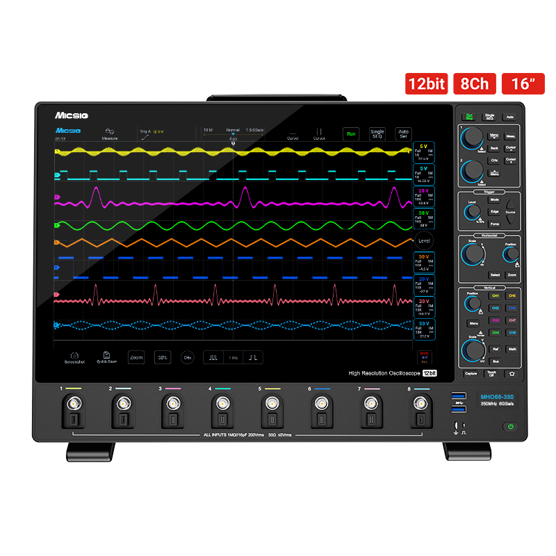
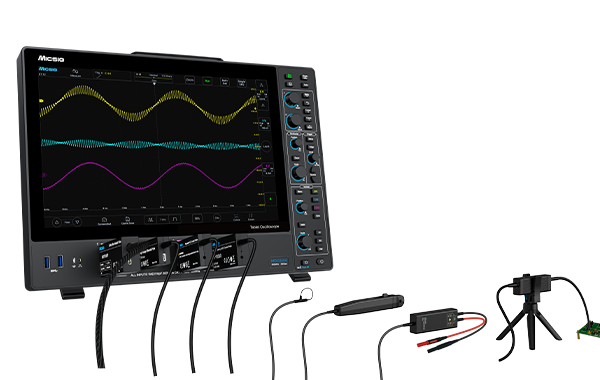
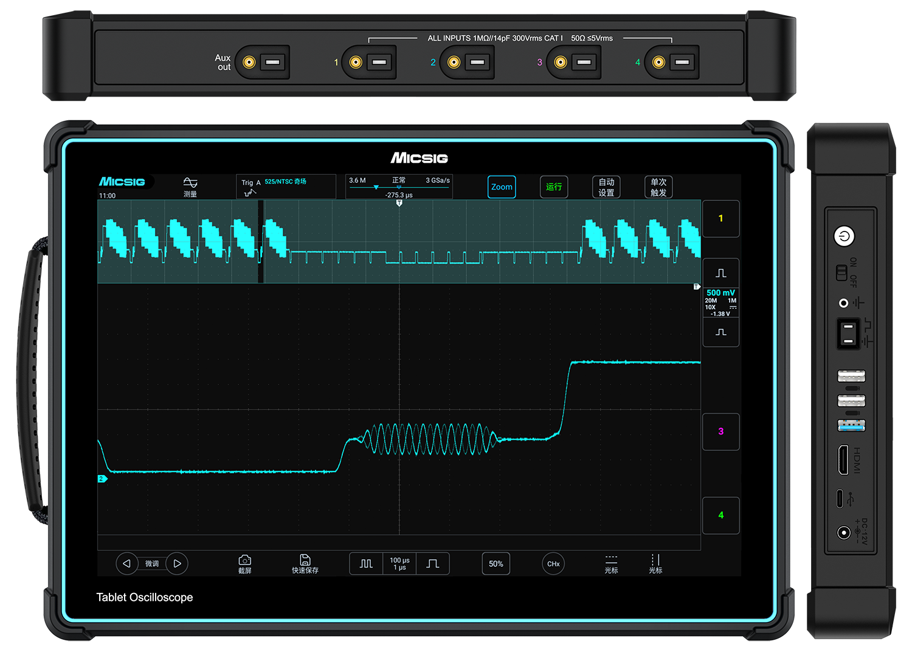
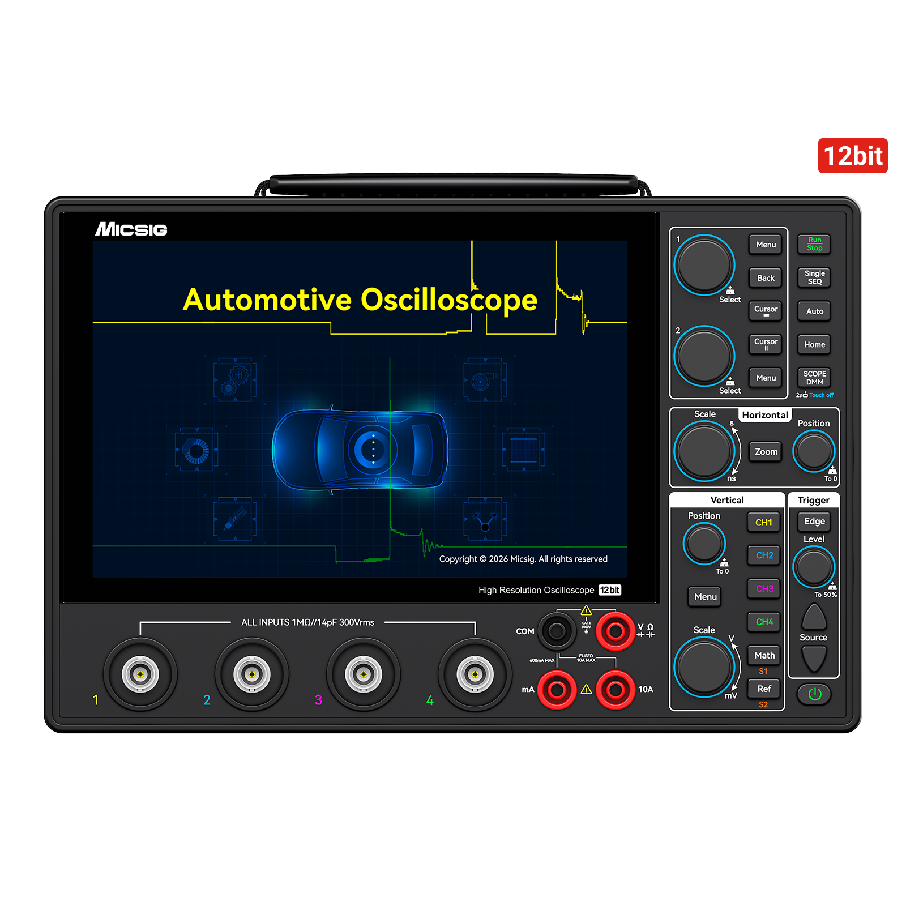

MHO high-resolution oscilloscopes
MHO1, MHO3 and MHO6 model families. Review each datasheet for available bandwidth, resolution, sample rate, memory and channel configurations.
MHO6 datasheet → · MHO3 → · MHO1 →Explore Micsig digital oscilloscopes for electronics test, power electronics, automotive diagnostics and field work. Compare instrument families and open the corresponding product datasheets through VIANOVA INDUSTRIAL SOLUTIONS.
Browse oscilloscope datasheetsChoose an oscilloscope by the signals and work environment you need to measure. Compare bandwidth, sample rate, channel count, memory depth, resolution, display format and required software on the exact model datasheet before selecting an instrument.

MHO1, MHO3 and MHO6 model families. Review each datasheet for available bandwidth, resolution, sample rate, memory and channel configurations.
MHO6 datasheet → · MHO3 → · MHO1 →
See the MDO Series product datasheet for the exact instrument configuration, supported measurement functions and model specifications.
MDO Series datasheet →


Explore the MO34 modular oscilloscope and STO tablet oscilloscope options. Use the full catalogue to compare all available family brochures.
MO34 datasheet → · STO datasheet →Start with the highest signal frequency and edge speed in your application, then check instrument bandwidth and sample rate. Confirm the number of simultaneous channels, memory depth, vertical resolution, probe compatibility and any software or serial-bus functions needed for your test. Model options within a family can differ, so use the PDF for the exact model before purchase.
VIANOVA INDUSTRIAL SOLUTIONS is an authorised Micsig distributor for India. Contact the India team with your application, signal range, bandwidth and preferred configuration for product information and a quotation.
Explore Micsig current probes → · Explore high-voltage differential probes → · Explore Rogowski coil current probes →
Tell us the signals, channels and application you need to support.
Micsig is a brand of its respective owner. Product configuration, availability and specifications are model dependent and should be confirmed in the current product datasheet.